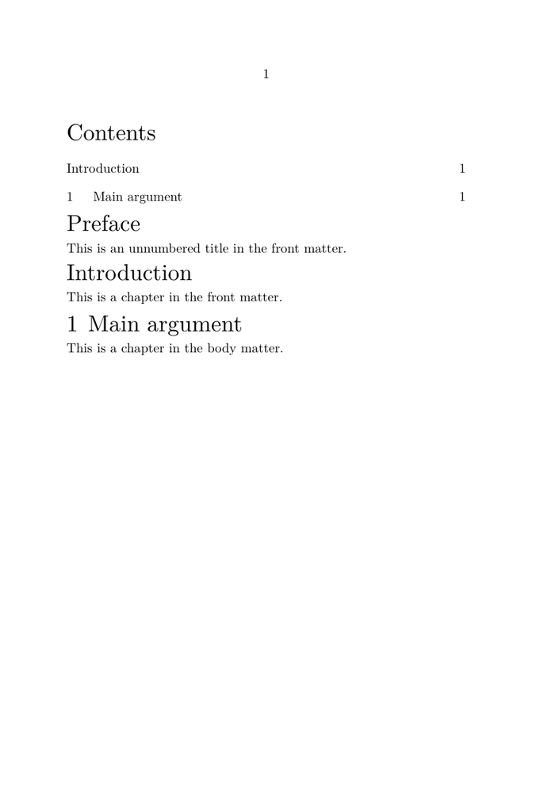
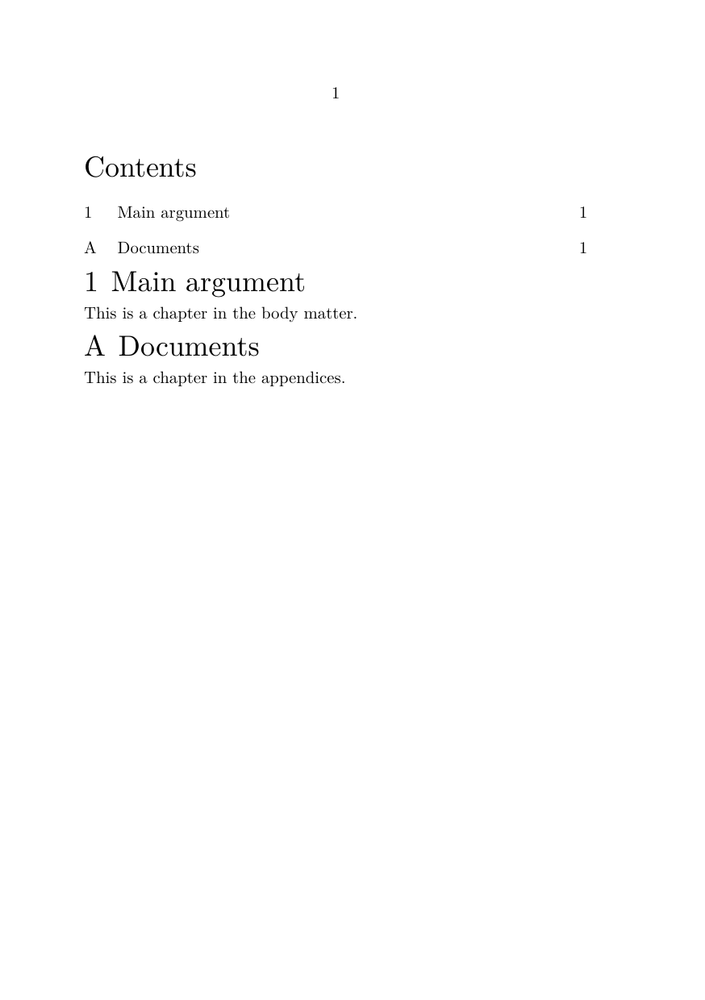
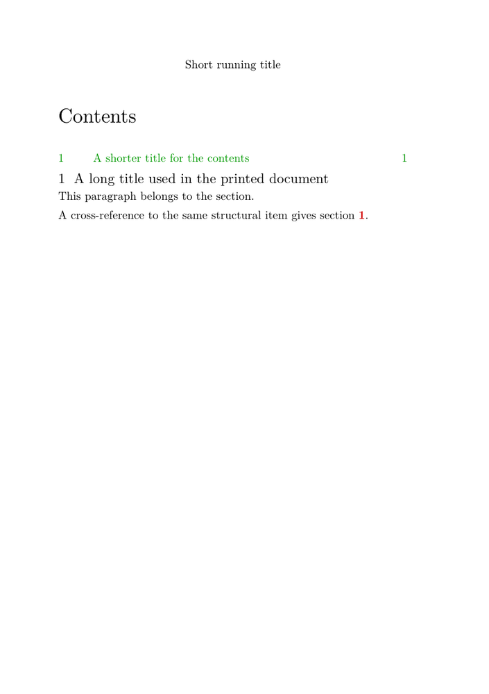
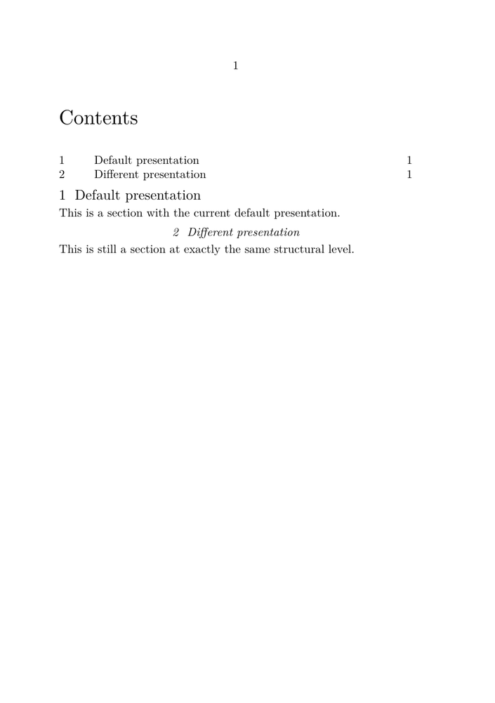
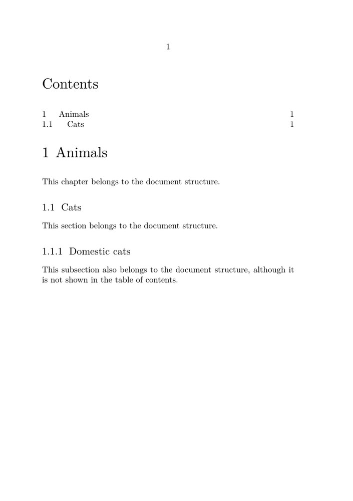
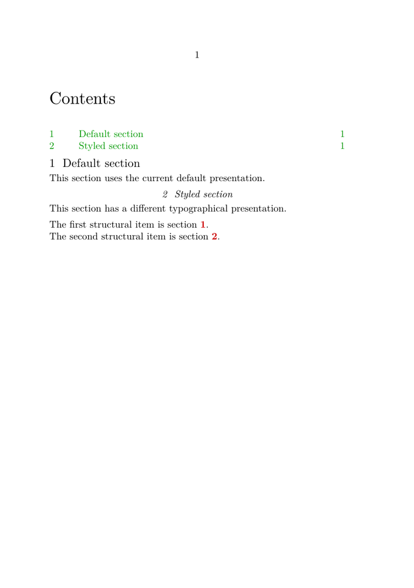

| TODO: This page is part of the renewal of the "Document structure and headlines" documentation area. Please improve, correct, or extend it where useful. (See: To-Do List) |
Explanation
This page explains the model behind document structure and section heads in ConTeXt.
If you want to build your first structured document, start with Tutorials. If you already know the basic model and want to perform a specific task, see the related how-to pages on headline formatting, section numbering, and tables of contents.
Contents
- 1 1. Structure and presentation
- 2 2. Structural levels
- 3 3. Section blocks: the large-scale organisation of a document
- 4 4. A structural item can have several representations
- 5 5. Structure, numbering, and formatting are separate questions
- 6 6. Structure and tables of contents
- 7 7. Structure and references
- 8 8. Where headline formatting begins
- 9 9. A compact mental model
- 10 10. Where to go next
1. Structure and presentation
ConTeXt distinguishes the logical structure of a document from the way that structure is presented on the page.
A chapter is a chapter because of its role in the document structure, not because it is printed in a large bold font. Likewise, changing the colour, spacing, alignment, or page design of a chapter head does not change the fact that it is a chapter.
Structure is not formatting
Changing the appearance of a section head does not change its structural level.
Use structural commands to describe what a division is. Use formatting commands such as \setuphead to control how its head looks.
A useful first distinction is therefore:
STRUCTURE PRESENTATION chapter ──────────────────────► \setuphead[chapter] section ──────────────────────► \setuphead[section] subsection ───────────────────► \setuphead[subsection] what the division is how its head looks
The left-hand side describes the hierarchy of the document. The right-hand side describes one possible typographical realisation of that hierarchy. The two are related, but they are not the same thing.
2. Structural levels
ConTeXt provides a hierarchy of predefined sectioning levels. The most commonly used are:
part
└── chapter
└── section
└── subsection
└── subsubsection
└── ...
You do not have to use every level. A short document may begin directly with sections, while a book may use parts, chapters, sections, and subsections.
The familiar start-stop forms include:
\startchapter[title={A chapter}] ... \startsection[title={A section}] ... \startsubsection[title={A subsection}] ... \stopsubsection \stopsection \stopchapter
Numbered and unnumbered heads occupy related structural roles, but they do not behave identically. For example, the usual unnumbered counterpart of a chapter is a title, and the usual unnumbered counterpart of a section is a subject.
NUMBERED USUALLY UNNUMBERED part — chapter title section subject subsection subsubject subsubsection subsubsubject ...
The distinction matters because numbering, inclusion in lists, and behaviour in different parts of a document may depend on the kind of head that is used.
3. Section blocks: the large-scale organisation of a document
Structural levels such as chapter, section, and
subsection describe the hierarchy of content within a
document.
ConTeXt also provides another mechanism for dividing a document into large functional regions. These regions are called section blocks.
The standard document regions are:
document ├── front matter ├── body matter ├── appendices └── back matter
They can be entered with:
\startfrontmatter ... \stopfrontmatter \startbodymatter ... \stopbodymatter \startappendices ... \stopappendices \startbackmatter ... \stopbackmatter
Section blocks are not additional structural levels above
part or chapter. They describe a different
aspect of document organisation:
SECTION BLOCKS STRUCTURAL LEVELS
front matter part
body matter chapter
appendices section
back matter subsection
...
large functional regions hierarchy of content
A chapter can therefore occur in different section blocks while remaining the same kind of structural object.
3.1. The block can change how a structural head behaves
The standard section blocks establish different contexts for the structures that occur inside them.
In the standard ConTeXt setup, numbering is disabled in the front matter and back matter, and enabled in the body matter and appendices:
front matter number=no body matter number=yes appendices number=yes back matter number=no
This does not turn a chapter into another structural level. It changes how that chapter is represented in the current region of the document.
About the examples on this page
All minimal working examples (MWEs) on this page use A5 paper and are deliberately configured, where necessary, to keep each demonstration on a single page. In particular, normal page breaks associated with structural heads or section blocks may be disabled so that the source and its rendered result remain compact enough to inspect in the Garden.
These settings are demonstration settings, not recommendations for the layout of a real document. When adapting an example for your own work, remove or change the A5 paper size and the page-breaking adjustments as appropriate.
Readers are encouraged to copy the complete code and compile it locally with a current ConTeXt LMTX installation. Local compilation makes it easier to inspect page breaking, PDF bookmarks, interactive references, running headers, and other features that cannot always be judged completely from the compact rendering displayed on the wiki.
To try an example with more usual document settings, start by changing:
\setuppapersize[A5]
to:
\setuppapersize[A4]
Then remove the page=no settings that were introduced only to
keep the demonstration on one page. For example:
\setuphead [chapter] [page=no]
can simply be tested without that page-breaking override:
\setuphead [chapter]
Likewise, experimental settings such as:
\setupsectionblock [bodypart] [page=no]
can be removed when testing the normal behaviour of section blocks.
Compile the complete example again after making these changes. The structural code remains the same, but chapter heads and section blocks can then follow their normal page-breaking behaviour and the document may extend over several pages.
For detailed control of headline placement and page breaking, see Headlines formatting.
The following small comparison makes the distinction visible:
-
\setuppapersize[A5] \setupbodyfont[10pt] % Laboratory setup: % keep the whole comparison on one page. \setuphead [chapter,title] [page=no, before={\blank[medium]}, after={\blank[small]}] \setupsectionblock [frontpart] [page=no] \setupsectionblock [bodypart] [page=no] \starttext \completecontent \startfrontmatter \title{Preface} This is an unnumbered title in the front matter. \chapter{Introduction} This is a chapter in the front matter. \stopfrontmatter \startbodymatter \chapter{Main argument} This is a chapter in the body matter. \stopbodymatter \stoptext
-

Figure 3.1. Front matter and body matter.
The same chapter structure behaves differently in different
section blocks. In the front matter, Introduction is printed
without a chapter number but remains in the table of contents; in the body
matter, Main argument is numbered normally.
The usual page breaks associated with chapters and section blocks have been disabled here only to keep the comparison on a single page.
The important point is not that the two chapters look different. It is that they remain chapters at the same structural level.
chapter
|
same structural level
|
+-----------+-----------+
| |
front matter body matter
| |
number not shown number shown
| |
remains in ToC remains in ToC
The section block therefore provides a context in which structural elements are interpreted. It does not replace the structural hierarchy.
Do not confuse section blocks with structural levels
front matter → body matter → appendices → back matter
describes the major functional regions of a document.
part → chapter → section → subsection
describes the hierarchy of content inside those regions.
A structural level can occur in more than one section block.
3.2. Section-block names and document environments
A note on section-block names
The standard document environments and the corresponding section-block names are related, but their names are not identical:
section-block name document environment frontpart \startfrontmatter ... \stopfrontmatter bodypart \startbodymatter ... \stopbodymatter appendix \startappendices ... \stopappendices backpart \startbackmatter ... \stopbackmatter
This is why the compact example above uses
\setupsectionblock[frontpart] and
\setupsectionblock[bodypart], while the document itself uses
\startfrontmatter and \startbodymatter.
3.3. A section block can also change the form of numbering
A section block can affect not only whether a structural number is shown, but also how that number is represented.
For example, compare the same structural head, chapter, in the
body matter and in the appendices:
-
\setuppapersize[A5] \setupbodyfont[10pt] % Laboratory setup: % keep the whole comparison on one page. \setuphead [chapter] [page=no, before={\blank[medium]}, after={\blank[small]}] \setupsectionblock [bodypart] [page=no] \setupsectionblock [appendix] [page=no] \starttext \completecontent \startbodymatter \chapter{Main argument} This is a chapter in the body matter. \stopbodymatter \startappendices \chapter{Documents} This is a chapter in the appendices. \stopappendices \stoptext
-

Figure 3.2. Body matter and appendices.
The same chapter structure is used in both section blocks.
In the body matter, Main argument is numbered
1; in the appendices, Documents is numbered
A. Both remain chapters at structural level 2 and both appear
in the table of contents.
The usual page breaks associated with chapters and section blocks have been disabled here only to keep the comparison on a single page.
The result is:
BODY MATTER APPENDICES
1 Main argument A Documents
│ │
└──────── chapter ──────────┘
level 2
The table of contents reflects the same distinction:
Contents 1 Main argument A Documents
Both headings are still chapters at the same structural level. What changes is the numbering context supplied by the section block.
This gives a more precise model:
structural level
≠
whether a number is shown
≠
how that number is represented
≠
presence in the table of contents
Section blocks provide structural context
A chapter in the body matter and a chapter in the appendices remain
chapter structures.
The section block can nevertheless change their numbering behaviour and number representation.
4. A structural item can have several representations
One of the most useful ideas for understanding ConTeXt's structure mechanism is that a structural item can provide several related pieces of information.
A simplified model is:
STRUCTURAL ITEM
│
┌────────────┬────────────┼───────────┬──────────┬──────────────┐
│ │ │ │ │ │
▼ ▼ ▼ ▼ ▼ ▼
number printed title list entry bookmark marking reference target
These representations are related because they belong to the same structural item, but they do not have to contain identical text.
For example:
-
\setuppapersize[A5] \setupbodyfont[10pt] \setupinteraction [state=start] % Keep the demonstration compact. \setuphead [section] [page=no, before={\blank[medium]}, after={\blank[small]}] % A marking is normally used for running information % such as a page header. \setupheadertexts [\getmarking[section]] \starttext \completecontent \startsection [title={A long title used in the printed document}, list={A shorter title for the contents}, bookmark={Short PDF bookmark}, marking={Short running title}, reference=sec:example] This paragraph belongs to the section. \blank[medium] A cross-reference to the same structural item gives section \in[sec:example]. \stopsection \stoptext
-

Figure 4.1. One structural section, several representations.
A single section supplies several representations for
different purposes. The printed page uses the full title, the table of
contents uses a shorter list title, and the running header
uses the marking value. The same structural item also
provides the reference target used by \in.
The bookmark value does not appear in the page image: it is
used in the PDF outline, where this example supplies
Short PDF bookmark.
The example is kept on a single A5 page so that the visible representations can be compared directly.
The important point is not the particular wording of this example. It is that one structural section can supply different representations for different purposes.
4.1. Printed title
The title value is the title normally printed with the section head.
4.2. Number
If the structural item is numbered, ConTeXt associates a structural number with it. The way that number is displayed can be changed independently of the logical level of the section.
See Section numbering for practical examples.
4.3. Table-of-contents entry
The list value can provide a different form of the title for lists such as the table of contents.
This is useful when the printed title is too long, contains material that is unsuitable in a list, or simply needs a shorter form.
See Table of contents.
4.4. PDF bookmark
The bookmark value can provide yet another form for the PDF outline.
This is particularly useful when the printed title contains formatting or other material that should not appear in a PDF bookmark.
4.5. Running marking
The marking value can provide the form of the title used by running headers or other mechanisms based on markings.
The printed head and the running head can therefore differ without changing the document structure.
4.6. Reference target
The reference value associates a stable reference key with the structural item so that other parts of the document can refer to it.
For practical use of references, see References.
5. Structure, numbering, and formatting are separate questions
It is useful to ask three different questions:
1. What is this division?
│
└── chapter / section / subsection / ...
2. How is it numbered?
│
└── 2 / II / B / no visible number / ...
3. How is its head presented?
│
└── font / colour / spacing / alignment / page design / ...
These questions interact, but they should not be collapsed into one.
The following comparison makes that separation visible:
-
\setuppapersize[A5] \setupbodyfont[10pt] % Laboratory setup: % keep the comparison on one page. \setuphead [section] [page=no, before={\blank[medium]}, after={\blank[small]}] \starttext \completecontent \section{Default presentation} This is a section with the current default presentation. \setuphead [section] [style=italic, align=middle] \section{Different presentation} This is still a section at exactly the same structural level. \stoptext
-

Figure 5.1. Same structural level, different presentation.
Both headings are section structures at the same structural
level. The second is centred and italic because the later
\setuphead[section] changes its typographical presentation;
it does not create a different kind of structural division.
Both sections also remain numbered and appear normally in the table of contents.
The example is kept on a single A5 page so that the two presentations can be compared directly.
Changing the presentation therefore does not turn a section into another structural level.
Likewise, changing a numbering conversion changes how a structural number is represented; it does not by itself redefine the document hierarchy.
This separation is one of the reasons ConTeXt can support both very simple documents and elaborate publication designs using the same structural mechanisms.
6. Structure and tables of contents
A table of contents is not the document structure itself. It is a representation of selected structural information.
A simplified relationship is:
document structure
│
├── chapter ──────┐
├── section ──────┼──► selection ───► list entries ───► table of contents
├── subsection ───┤
└── ... ──────────┘
The following example makes this selection visible:
-
\setuppapersize[A5] \setupbodyfont[10pt] % Laboratory setup: % keep the comparison on one page. \setuphead [chapter,section,subsection] [page=no] % Show chapters and sections in the table of contents, % but deliberately omit subsections. \setupcombinedlist [content] [list={chapter,section}] \starttext \completecontent \chapter{Animals} This chapter belongs to the document structure. \section{Cats} This section belongs to the document structure. \subsection{Domestic cats} This subsection also belongs to the document structure, although it is not shown in the table of contents. \stoptext
-

Figure 6.1. The table of contents is a selection of the document structure.
The document contains a chapter, a section, and a subsection, but the table of contents has deliberately been configured to show only chapters and sections. The subsection remains part of the structural hierarchy even though it is absent from this particular representation of that hierarchy.
The example is kept on a single A5 page so that the document structure and its table-of-contents representation can be compared directly.
The example therefore makes an important distinction explicit:
absence from this table of contents
≠
absence from the document structure
This explains why several aspects can be controlled separately:
- whether a structural level is included in the contents;
- what text is used for its list entry;
- how the entry is formatted;
- how many levels are shown;
- whether an unnumbered head is included.
The structural hierarchy exists independently of the particular table of contents that is printed.
7. Structure and references
A structural item can also act as a reference target.
The following comparison makes this visible:
-
\setuppapersize[A5] \setupbodyfont[10pt] \setupinteraction [state=start] % Laboratory setup: % keep the comparison on one page. \setuphead [section] [page=no, before={\blank[medium]}, after={\blank[small]}] \starttext \completecontent \startsection [title={Default section}, reference=sec:default] This section uses the current default presentation. \stopsection \setuphead [section] [style=italic, align=middle] \startsection [title={Styled section}, reference=sec:styled] This section has a different typographical presentation. \stopsection \blank[medium] The first structural item is section \in[sec:default]. The second structural item is section \in[sec:styled]. \stoptext
-

Figure 7.1. References identify structural items, not headline appearance.
Both headings are section structures and each carries its own
stable reference key. The second section is centred and italic,
but the change in typographical presentation does not alter the way it is
identified by a cross-reference.
The example is kept on a single A5 page so that the two structural items, their different presentations, and the resulting references can be compared directly.
The reference belongs to the structural item. It is not merely attached to the visual shape of the title.
This is why references continue to identify the section even if the appearance of its head is later changed.
8. Where headline formatting begins
Once the structural model is clear, headline formatting becomes easier to understand.
A structural command such as \chapter,
\section, or \startsection ... \stopsection
establishes the role of a division in the document hierarchy. The main
interface for controlling the appearance of its head is \setuphead.
The distinction can be represented as:
STRUCTURAL ITEM
│
│ chapter / section / subsection / ...
│
▼
section head
│
│ \setuphead
│
├── style
├── colour
├── alignment
├── spacing
├── number placement
├── title placement
└── page-breaking behaviour
│
▼
printed page
The formatting layer therefore acts on the presentation of an existing structural item. It does not normally redefine that item's place in the document hierarchy.
This is exactly what Figure 5.1
demonstrates: both headings remain section structures at the
same level even though the second is given a different typographical
presentation.
Structure first, presentation second
When designing a document, it is usually helpful to decide first what a division is structurally, and only then decide how its head should look.
Do not choose chapter, section, or another
structural level merely because its default appearance happens to resemble
the desired typography. The appearance can be changed independently with
\setuphead.
Detailed control of headline typography belongs to the corresponding how-to documentation. See Headlines formatting and \setuphead.
9. A compact mental model
The preceding examples can now be brought together in a single working model.
A ConTeXt document has both a large-scale organisation and a hierarchy of structural divisions. Structural items can then provide several representations, while their typographical appearance is controlled separately.
DOCUMENT
│
├── section blocks
│ │
│ ├── front matter
│ ├── body matter
│ ├── appendices
│ └── back matter
│
└── structural hierarchy
│
└── part
│
└── chapter
│
└── section
│
└── subsection
│
└── ...
A particular structural item — for example, a section — can then supply several related forms of information:
STRUCTURAL ITEM
section
│
┌────────────┬────────────┼───────────┬──────────┬──────────────┐
│ │ │ │ │ │
▼ ▼ ▼ ▼ ▼ ▼
number printed title list entry bookmark marking reference target
│ │ │ │
▼ ▼ ▼ ▼
ToC PDF outline running cross-reference
information
These are not separate sections. They are different uses or representations of information associated with the same structural item.
Its visible headline is then subject to another layer:
STRUCTURAL ITEM
│
│ identity, level, metadata
▼
SECTION HEAD
│
│ \setuphead
▼
TYPOGRAPHICAL PRESENTATION
│
├── style
├── colour
├── alignment
├── spacing
├── number and title placement
└── page-breaking behaviour
│
▼
PRINTED PAGE
This gives several distinctions that are useful to keep in mind:
structural level
≠
section block
≠
visible numbering
≠
table-of-contents selection
≠
headline formatting
The mechanisms interact, but none of these distinctions should be collapsed into another.
A practical way to think about structure
When working on a structured document, ask the questions in this order:
- What kind of structural division is this?
- In which section block does it occur?
- How should it be numbered and represented in lists, bookmarks, markings, and references?
- How should its headline be typeset?
Keeping these questions separate makes both simple and complex documents easier to design, modify, and maintain.
The diagrams above are deliberately simplified. They are intended as a working model for document authors, not as a description of ConTeXt's internal implementation.
10. Where to go next
This page has explained the model behind document structure and section heads. The next step depends on what you want to do.
If you are learning document structure
Continue with Tutorials to build a complete structured document step by step.
For practical tasks:
- Headlines formatting — change the appearance, spacing, alignment, placement, or page-breaking behaviour of section heads.
- Section numbering — change whether and how structural divisions are numbered.
- Table of contents — control which structural items appear in contents and how their entries are presented.
For related mechanisms:
- References — refer to structural items and other document objects.
- Makeup — create pages with a special layout when the task is primarily page-oriented rather than structural.
- Setups — collect reusable configuration for document structure and presentation.
For command-level information:
- Sectioning commands
- Structure commands
- Conversion commands
- \definecounter and \setupcounter — counter definition and configuration
Keep the distinction in mind
When moving to the practical pages, it remains useful to ask separately:
What is the structural division? How is it numbered? How is it represented in lists and references? How should its head look?
Many apparently difficult sectioning problems become simpler once these questions are kept separate.